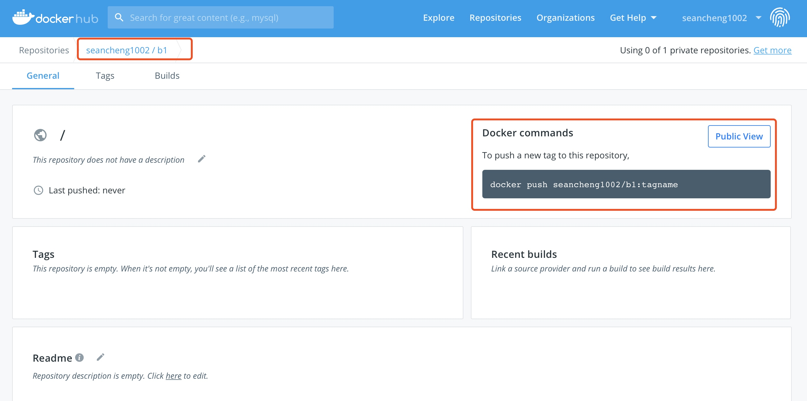

docker镜像管理基础
镜像的概念
镜像可以理解为应用程序的集装箱，而docker用来装卸集装箱。
docker镜像含有启动容器所需要的文件系统及其内容，因此，其用于创建并启动容器。
docker镜像采用分层构建机制，最底层为bootfs，其上为rootfs
- bootfs：用于系统引导的文件系统，包括bootloader和kernel，容器启动完成后会被卸载以节约内存资源
- rootfs：位于bootfs之上，表现为docker容器的根文件系统
- 传统模式中，系统启动之时，内核挂载rootfs会首先将其挂载为“只读”模式，完整性自检完成后将其重新挂载为读写模式
- docker中，rootfs由内核挂载为“只读”模式，而后通过“联合挂载”技术额外挂载一个“可写”层
注意：当删除容器时，这个容器自有的“可写”层会一起被删除
docker镜像层
位于下层的镜像称为父镜像（parrent image），最底层的称为基础镜像（base image）；
最上层为“可读写”层，其下的均为“只读”层。
docker存储驱动
docker提供了多种存储驱动来实现不同的方式存储镜像，下面是常用的几种存储驱动：
- AUFS
- OverlayFS
- Devicemapper
- Btrfs
- VFS
AUFS
AUFS（AnotherUnionFS）是一种Union FS，是文件级的存储驱动。AUFS是一个能透明覆盖一个或多个现有文件系统的层状文件系统，把多层合并成文件系统的单层表示。简单来说就是支持将不同目录挂载到同一个虚拟文件系统下的文件系统。这种文件系统可以一层一层地叠加修改文件。无论底下有多少层都是只读的，只有最上层的文件系统是可写的。当需要修改一个文件时，AUFS创建该文件的一个副本，使用CoW将文件从只读层复制到可写层进行修改，结果也保存在可写层。在Docker中，底下的只读层就是image，可写层就是Container。
AUFS文件系统据说有3W行代码，而ext4文件系统却只有4000-5000行左右代码，这些代码是要被整合进内核的，后来AUFS申请要被合并进内核代码的时候，linuz觉得它这代码太过臃肿，于是拒绝了。因此AUFS这个文件系统一直以来就不是linux内核中自有的文件系统，想用AUFS这个文件系统的话，必须自己向内核打补丁并去编译使用它，但redhat系列的操作系统一向以稳定著称，不会干这种出格的事，所以在redhat系列操作系统中使用AUFS并无可能。而ubuntu上的docker默认使用的就是AUFS。
OverlayFS
Overlay是Linux内核3.18后支持的，也是一种Union FS，和AUFS的多层不同的是Overlay只有两层：一个upper文件系统和一个lower文件系统，分别代表Docker的镜像层和容器层。当需要修改一个文件时，使用CoW将文件从只读的lower复制到可写的upper进行修改，结果也保存在upper层。在Docker中，底下的只读层就是image，可写层就是Container。目前最新的OverlayFS为Overlay2。
AUFS和Overlay都是联合文件系统，但AUFS有多层，而Overlay只有两层，所以在做写时复制操作时，如果文件比较大且存在比较低的层，则AUSF会慢一些。而且Overlay并入了linux kernel mainline，AUFS没有。目前AUFS已基本被淘汰。
DeviceMapper
Device mapper是Linux内核2.6.9后支持的，提供的一种从逻辑设备到物理设备的映射框架机制，在该机制下，用户可以很方便的根据自己的需要制定实现存储资源的管理策略。AUFS和OverlayFS都是文件级存储，而Device mapper是块级存储，所有的操作都是直接对块进行操作，而不是文件。Device mapper驱动会先在块设备上创建一个资源池，然后在资源池上创建一个带有文件系统的基本设备，所有镜像都是这个基本设备的快照，而容器则是镜像的快照。所以在容器里看到文件系统是资源池上基本设备的文件系统的快照，并没有为容器分配空间。当要写入一个新文件时，在容器的镜像内为其分配新的块并写入数据，这个叫用时分配。当要修改已有文件时，再使用CoW为容器快照分配块空间，将要修改的数据复制到在容器快照中新的块里再进行修改。
OverlayFS是文件级存储，Device mapper是块级存储，当文件特别大而修改的内容很小，Overlay不管修改的内容大小都会复制整个文件，对大文件进行修改显然要比小文件要消耗更多的时间，而块级无论是大文件还是小文件都只复制需要修改的块，并不是整个文件，在这种场景下，显然device mapper要快一些。因为块级的是直接访问逻辑盘，适合IO密集的场景。而对于程序内部复杂，大并发但少IO的场景，Overlay的性能相对要强一些。
docker registry
启动容器时，docker daemon会试图从本地获取相关的镜像，本地镜像不存在时，其将从Registry中下载该镜像并保存到本地。
Registry用于保存docker镜像，包括镜像的层次结构和元数据。用户可以自建Registry，亦可使用官方的Docker Hub。
docker registry的分类：
- Sponsor Registry：第三方的Registry，供客户和Docker社区使用
- Mirror Registry：第三方的Registry，只让客户使用
- Vendor Registry：由发布docker镜像的供应商提供的registry
- Private Registry：通过设有防火墙和额外的安全层的私有实体提供的registry
docker registry的组成：
- Repository
- 由某特定的docker镜像的所有迭代版本组成的镜像仓库
- 一个Registry中可以存在多个Repository
- Repository可分为“顶层仓库”和“用户仓库”
- 用户仓库名称格式为“用户名/仓库名”
- 每个仓库可包含多个Tag(标签)，每个标签对应一个镜像
- Index
- 维护用户帐户、镜像的检验以及公共命名空间的信息
- 相当于为Registry提供了一个完成用户认证等功能的检索接口
Docker Registry中的镜像通常由开发人员制作，而后推送至“公共”或“私有”Registry上保存，供其他人员使用，例如“部署”到生产环境。
docker镜像的制作
多数情况下，我们做镜像是基于别人已存在的某个基础镜像来实现的，我们把它称为base image。比如一个纯净版的最小化的centos、ubuntu或debian。
那么这个最小化的centos镜像从何而来呢？其实这个基础镜像一般是由Docker Hub的相关维护人员，也就是Docker官方手动制作的。这个基础镜像的制作对于Docker官方的专业人员来说是非常容易的，但对于终端用户来说就不是那么容易制作的了。
Docker Hub
Docker Hub is a cloud-based registry service which allows you to link to code repositories, build your images and test them, stores manually pushed images, and links to Docker Cloud so you can deploy images to your hosts.
It provides a centralized resource for container image discovery, distribution and change management, user and team collaboration, and workflow automation throughout the development pipeline.
Docker Hub provides the following major features:
- Image Repositories
- Find and pull images from community and official libraries, and manage, push to, and pull from private images libraries to which you have access.
- Automated Builds
- Automatically create new images when you make changes to a source code repository.
- Webhooks
- A feature of Automated Builds, Webhooks let you trigger actions after a successful push to a repository.
- Organizations
- Create work groups to manage access to image repositories.
- GitHub and Bitbucket Integration
- Add the Hub and your Docker Images to your current workflows.
docker镜像的获取
To get Docker images from a remote registry（such as your own Docker registry）and add them to your local system, use the docker pull command：
# docker pull <registry>[:<port>]/[<namespace>/]<name>:<tag>
The
Together,
- Some registries also support raw
;for those, is optional - When it is included, however, the additional level of hierarchy that
provides is usefull to distinguish between images with the same
The additional level of hierarchy of
| Namespace | Examples(<namespace>/<name>) |
|---|---|
| organization | redhat/kubernetes, google/kubernetes |
| login(username) | Alice/application, bob/application |
| role | devel/database, test/database, prod/database |
镜像的生成
镜像的生成途径：
- Dockerfile
- 基于容器制作
- Docker Hub automated builds
基于容器制作镜像
Create a new image from container's changes
Usage：
docker commit [OPTIONS] CONTAINER [REPOSITORY[:TAG]]
| Options | Default | Description |
|---|---|---|
| —author, -a | Author (e.g., "John Hannibal Smith hannibal@a-team.com") | |
| -c, --change list | Apply Dockerfile instruction to the created image | |
| -m, --message string | Commit message | |
| -p, --pause | true | Pause container during commit |
[root@localhost ~]# docker pull busybox
Using default tag: latest
latest: Pulling from library/busybox
bdbbaa22dec6: Pull complete
Digest: sha256:6915be4043561d64e0ab0f8f098dc2ac48e077fe23f488ac24b665166898115a
Status: Downloaded newer image for busybox:latest
docker.io/library/busybox:latest
[root@localhost ~]# docker run --name b1 -it busybox
/ # ls
bin dev etc home proc root sys tmp usr var
/ # mkdir data
/ # echo 'Busybox page test.' > data/index.html
/ # cat data/index.html
Busybox page test.
在创建镜像时，我们不能关闭容器，必须使其处于运行状态，所以我们必须要另起一个终端，然后执行
[root@localhost ~]# docker commit -p b1
sha256:b84e7e2972700a24f675182818666bf22c6c0cd95bf30643513020d4d9f3920d
[root@localhost ~]# docker images
REPOSITORY TAG IMAGE ID CREATED SIZE
<none> <none> b84e7e297270 3 seconds ago 1.22MB
busybox latest 6d5fcfe5ff17 6 weeks ago 1.22MB
[root@localhost ~]# docker tag b84e7e297270 seancheng1002/b1:v0.1
[root@localhost ~]# docker images
REPOSITORY TAG IMAGE ID CREATED SIZE
seancheng1002/b1 v0.1 b84e7e297270 58 seconds ago 1.22MB
busybox latest 6d5fcfe5ff17 6 weeks ago 1.22MB
此时要注意的是，我们的仓库名叫b1，所以我们要在Docker Hub上创建一个名为b1的仓库，然后再将我们做好的镜像push上去

[root@localhost ~]# docker login
Login with your Docker ID to push and pull images from Docker Hub. If you don't have a Docker ID, head over to https://hub.docker.com to create one.
Username: seancheng1002
Password:
WARNING! Your password will be stored unencrypted in /root/.docker/config.json.
Configure a credential helper to remove this warning. See
https://docs.docker.com/engine/reference/commandline/login/#credentials-store
Login Succeeded
[root@localhost ~]# docker push seancheng1002/b1:v0.1
The push refers to repository [docker.io/seancheng1002/b1]
b91c804c38c2: Pushed
195be5f8be1d: Mounted from library/busybox
v0.1: digest: sha256:67be9d39f8a31405078567f51a447fe60b52f398bc6c0e9f351c083e5e512e2d size: 734
使用新生成的镜像创建容器
[root@localhost ~]# docker run --name t1 -it seancheng1002/b1:v0.1
WARNING: IPv4 forwarding is disabled. Networking will not work.
/ # ls
bin data dev etc home proc root sys tmp usr var
/ # ls data/
index.html
/ # cat data/index.html
Busybox page test.
由此可见，新生成的镜像中是包含了新增的内容的，但是此时有一个问题，那就是容器默认要启动的进程是什么？在这里，默认情况下是启动的sh进程，但我们是要启动一个http站点，所以我们要在创建镜像时将容器默认启动的进程设为httpd，这样一来我们就可以通过新生成的镜像来快速构建一个简单的http站点了。
使用docker inspect命令查看b1容器启动的默认进程是什么
[root@localhost ~]# docker inspect b1
[
...此处省略N行
"Cmd": [
"sh"
],
...此处省略N行
"Gateway": "172.17.0.1",
"IPAddress": "172.17.0.2",
...此处省略N行
]
重新生成镜像并上传
[root@localhost ~]# docker commit -a 'sean <sean1002@126.com>' -c 'CMD ["/bin/httpd","-f","-h","/data"]' -p b1 seancheng1002/b1:v0.2
[root@localhost ~]# docker push seancheng1002/b1
使用新生成的镜像创建容器
[root@localhost ~]# docker run --name t2 -d seancheng1002/b1:v0.2
98708886e332243bb64dac32f7e5210c8219e30495150c8fde4938d5d748ada7
[root@localhost ~]# docker container ls
CONTAINER ID IMAGE COMMAND CREATED STATUS PORTS NAMES
98708886e332 seancheng1002/b1:v0.2 "/bin/httpd -f -h /d…" 7 seconds ago Up 5 seconds t2
a2e954da2011 busybox "sh" About an hour ago Up About a minute b1
使用docker inspect命令查看t2容器启动的默认进程是什么，以及其IP地址，然后用curl命令访问该IP，看是否能访问到网页
[root@localhost ~]# curl 172.17.0.3
Busybox page test.
镜像的导入与导出
假如有2台主机，我们在主机1上做了一个镜像，主机2想用这个镜像怎么办呢？
我们可以在主机1上push镜像到镜像仓库中，然后在主机2上pull把镜像拉下来使用，这种方式就显得比较麻烦，假如我只是测试用的，在一台主机上做好镜像后在另一台主机上跑一下就行了，没必要推到仓库上然后又把它拉到本地来。
此时我们可以在已有镜像的基础上把镜像打包成一个压缩文件，然后拷贝到另一台主机上将其导入，这就是镜像的导入和导出功能。
docker中我们使用docker save进行导出，使用docker load进行导入。
在已生成镜像的主机上执行docker save导出镜像
docker save -o myimages.gz seancheng1002/b1
在另一台没有镜像的主机上执行docker load导入镜像
docker load -i myimages.gz